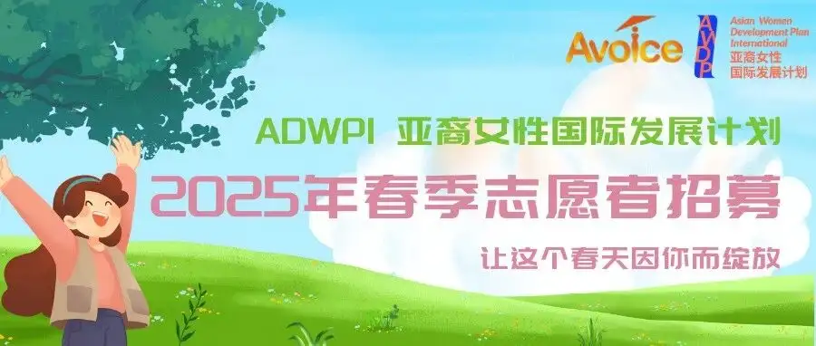
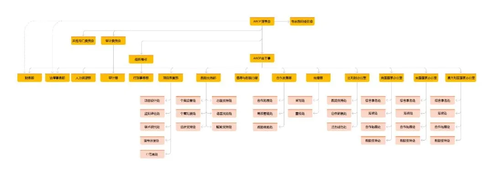

优秀志愿者风采
VOLUNTEER

招募计划
2025 RECRUIT
AWDPI本次春季招募共有12个部门，130个岗位参与，其中大多数岗位欢迎大家以线上的形式进行，少数岗位欢迎大家以线下的形式进行。
工作时间：每周至少7小时，可以灵活安排，根据部门需求和个人时间协调。
工作周期：负责人需确定在AWDPI任职至少1年，成员需确定在AWDPI任职至少6个月。
AWDPI亚裔女性国际发展计划整体组织架构

关于本次春招的具体岗位介绍可扫描文末二维码 或在文末处点击“阅读原文”搜索岗位名称/部门名称来查询岗位的详细信息/部门所有岗位的详细信息。
部门岗位清单
2025 RECRUIT
1
财务部
部门介绍：
财务部为AWDPI重要的后台部门，主要负责组织的预算设计，筹资管理与报表披露；加入AWDPI财务部，你将有机会加入跨国NGO组织财务制度建设过程，并以财务视角助力组织战略的成功。
岗位清单：
财务部-国家办公室财务对接（2人）
财务部-海外财务专家顾问（7人）
2
法律事务部
部门介绍：
法律事务部负责组织总部以及各国家办公室（地区分部）的组织管治，参与制定组织各项制度并监督其实施，管控组织以及各项业务法律风险，并提供包括合同起草审查、法律研究等在内的日常法律服务支持。此外，法律事务部还将协调外部法律顾问开展工作。
岗位清单：
In-House Counsel(不限人数，全年招募）
In-House Counsel (UK local)（不限人数，全年招募）
In-House Counsel (US local)（不限，全年招募）
*法律事务部简历投递快速通道，扫描此二维码直通部门负责人
3
传播部
部门介绍：
传播部负责传递亚裔女性生存和发展困境的声音，通过温暖的品牌设计表达女性力量，通过社交媒体矩阵与网站联动为受助女性提供发声支持，也让女性保护领域的专家专访、学术研究报告、心理与救助科普、性别视角观点得到更多的关注。
岗位清单：
（滑动查看）
4
合作发展部
部门介绍：
合作拓展部负责组织拓展海内外合作资源，搭建合作关系网络及海外救助网络，为救助、筹资、传播等方面的工作提供合作资源支持，并依托合作关系的建立开展各类合作项目。
岗位清单：
（滑动查看）
5
救助支持部
部门介绍：
救助支持部负责海外救助支持工作的具体执行，下设个案对接处、个案监督处、法律支持处、心理支持处、语言支持处和赋能支持处，并领导、统筹、监督各国家办公室（地区分部）的线下救助支持工作。
岗位清单：
（滑动查看）
6
人力资源部
部门介绍：
人力资源部负责建立、建全机构内部的人力资源管理体系，通过科学的人才规划、绩效管理、评估考核，建设和培训优秀的志愿者团队。
岗位清单：
（滑动查看）
7
项目质量部
部门介绍：
项目质量部下设学术研究处、项目设计处、监测评估处、IT信息处、课程研发处 共5个子部门。其中，IT信息处负责网站的设计、开发、测试以及维护，组织内部与各部门合作的日常IT支持工作等。学术研究处负责策划并实施与性别平等、反家暴、女性保护与赋能等相关主题的的学术研究，撰写研究报告及科普文章，为机构战略和项目设计提供建议与调整方向。课程研发处专注于研发反家暴相关课程、策划艺术疗愈工作坊，并建立匿名支持小组。我们希望通过 内容与技术结合，打造更实用、易参与的教育和支持方式，让更多人获得帮助。欢迎有相关背景的伙伴加入，共同探索更有效的创伤支持方式。
岗位清单：
（滑动查看）
*申请课程研发处相关岗位（除匿名支持小组负责人/成员外）的候选人，请随简历提交作品集。
8
英国国家办公室
部门介绍：
英国国家办公室是AWDPI亚裔女性国际发展计划在英国的分支机构，在英国开展反家暴救助、反性别暴力宣传与倡导、女性赋能等项目。
岗位清单：
（滑动查看）
9
美国国家办公室
部门介绍：
美国国家办公室是AWDPI亚裔女性国际发展计划在美国的分支机构，在美国开展反家暴救助、反性别暴力宣传与倡导、女性赋能等项目。
岗位清单：
（滑动查看）
10
澳大利亚国家办公室
部门介绍：
澳大利亚国家办公室是AWDPI亚裔女性国际发展计划在澳大利亚的分支机构，在澳大利亚开展反家暴救助、反性别暴力宣传与倡导、女性劳动力、女性领导力、女性赋能等项目。
岗位清单：
（滑动查看）
*澳大利亚国家办公室优先考虑线下负责人
11
比利时国家办公室
部门介绍：
比利时国家办公室是AWDPI亚裔女性国际发展计划在比利时的分支机构，在比利时开展反家暴救助、反性别暴力宣传与倡导、女性赋能等项目。
岗位清单：
（滑动查看）
12
倡导力与影响力部
部门介绍：
倡导与影响力部负责策划、组织和推广围绕女性发展与性别平等议题的线下主题活动，通过政策倡导、媒体发声和公众参与，推动性别平等议题在更广泛的社会、政策和文化层面得到持续关注与支持。
岗位清单：
成员
倡导与影响力部成员（北京）（5人）*
倡导与影响力部成员（上海）（5人）*
倡导与影响力部成员（大湾区）（5人）*
你的收获将超越想象
当您选择成为AWDPI大家庭的一员：
终身价值账户
志愿者证书（工作满6个月及以上）/实习证明（工作满1年及以上）
优秀成员可以获得项目核心团队/理事/专家顾问的指导和推荐信
参与评选月度和年度优秀志愿者
接收全球性别平等相关领域岗位内推
积累「志愿者积分」兑换组织各项周边等福利
加入AWDPI终身校友会，结识来自世界各地、志同道合的伙伴，与大家一起学习成长
专业成长加速器
参与制定影响女性主义行动计划的实证研究 解锁「政策倡导-社群动员-跨国协作」三维能力模型
参与内部国际性别平等与女性发展领域的主题活动与培训
参加内外部的能力建设和交流活动，参加志愿者线下团建活动
-
参与性别平等、女性保护与发展、青年赋能等相关领域的课题研究，参与制定影响女性主义行动计划的实证研究
全球行动网络接入
加入全球行动圈，与国际组织、国内外公益机构、学术机构、基金会的合作交流机会
进入亚裔女性领导力池，获全球组织合作伙伴实习、活动内推机会
有机会成为亚太青年企业家APEA女性国际发展委员会执委
岗位探索指南
① 扫描下方「全球岗位地图」二维码
② 输入部门/岗位名称直达岗位库
搜索部门名称查看该部门所有岗位信息，或搜索任一具体岗位名称查看岗位信息。
岗位投递通道：
投递须知:
每位申请人可编织3条可能性轨迹（可选择3个意向岗位，志愿优先级决定故事主线）
截止时间：北京时间2025年4月30日
穿越迷雾指引：有任何疑问，欢迎联系邮箱[email protected]
招募流程
PROCESS
01
提交简历
02
简历初选
03
笔试（如有）
04
面试
05
录取通知
06
入职培训
这不仅是招募，
更是全球性别平等行动者的集结令！
当伦敦地铁里的性别暴力数据变成布鲁塞尔的立法修正案，当纽约社区的口述史化作日内瓦联合国会场的决议案。
我们相信——
您此刻的点击，正在重塑北纬51°的性别权力光谱。
期待您的加入！
内容来源｜AWDPI Team
排版、封面｜池一诺、王佳怡